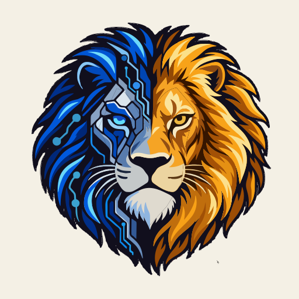
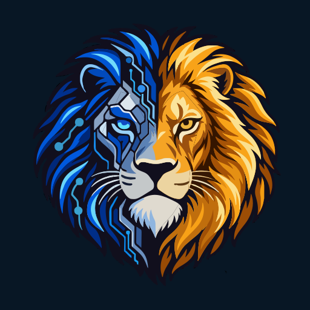
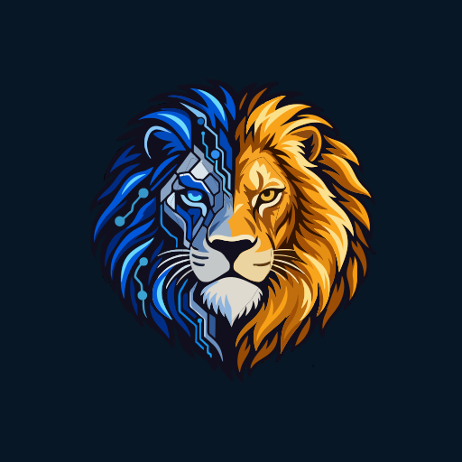
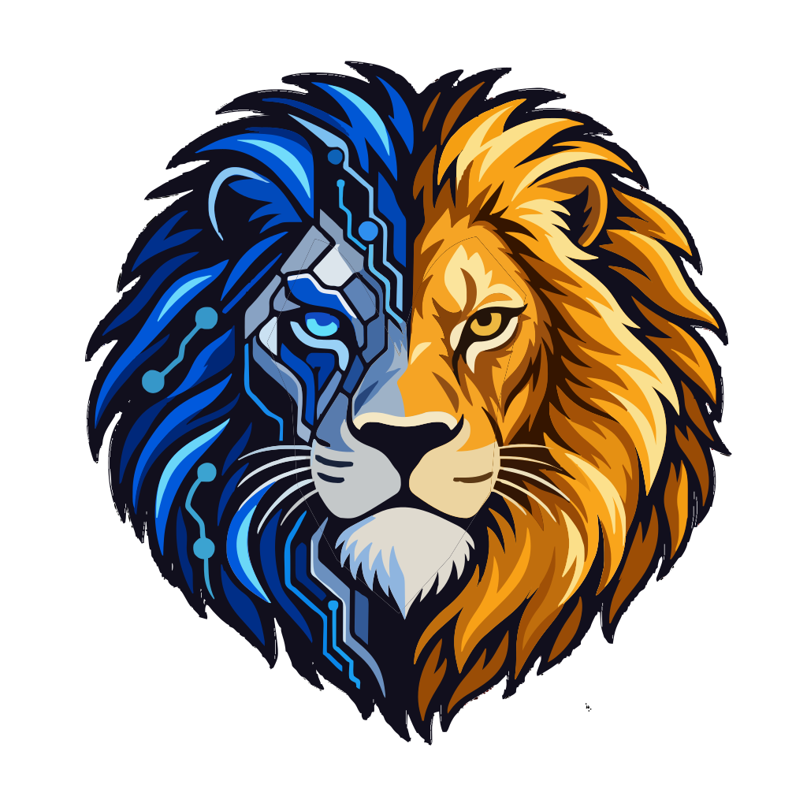

Artwork review, not a screenshot of an installed iOS app. Preview masks are illustrative; export files contain no rounded-square mask, outer shadow or glass effect. The PWA safe-zone circle is measured automatically.